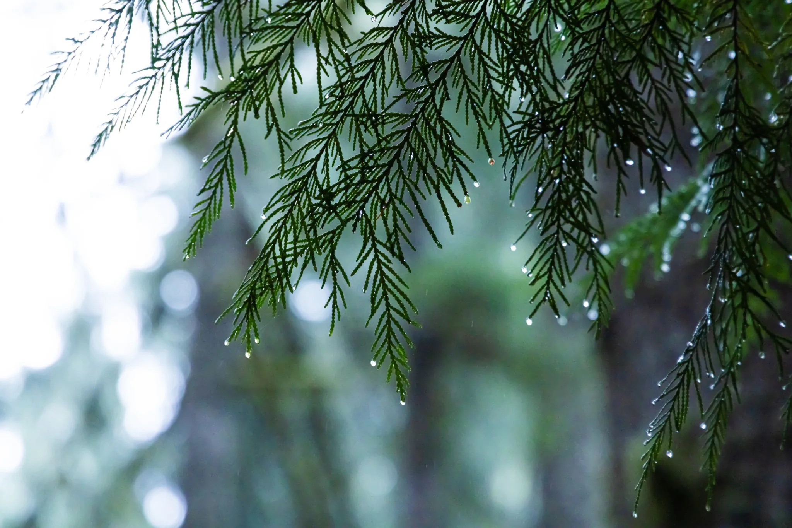
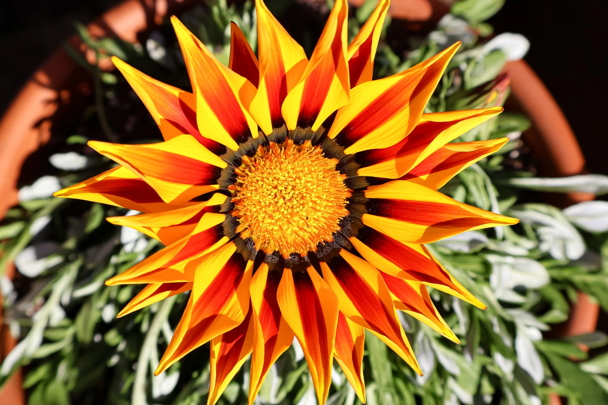
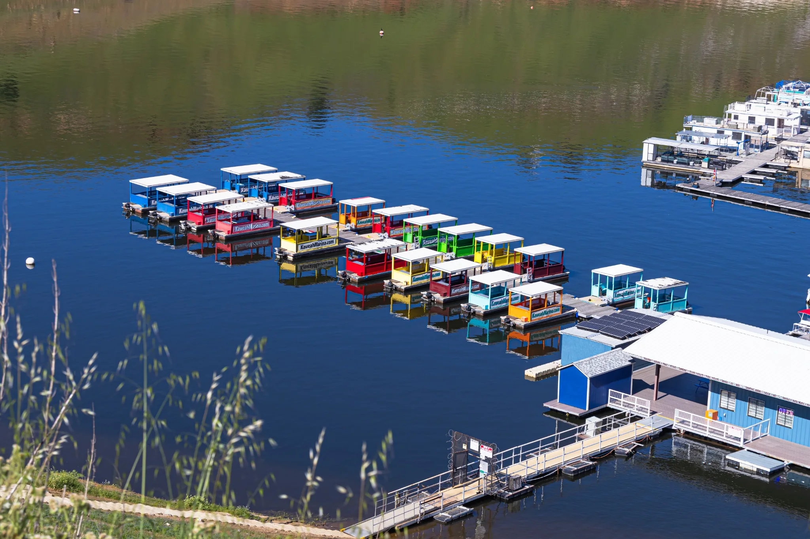
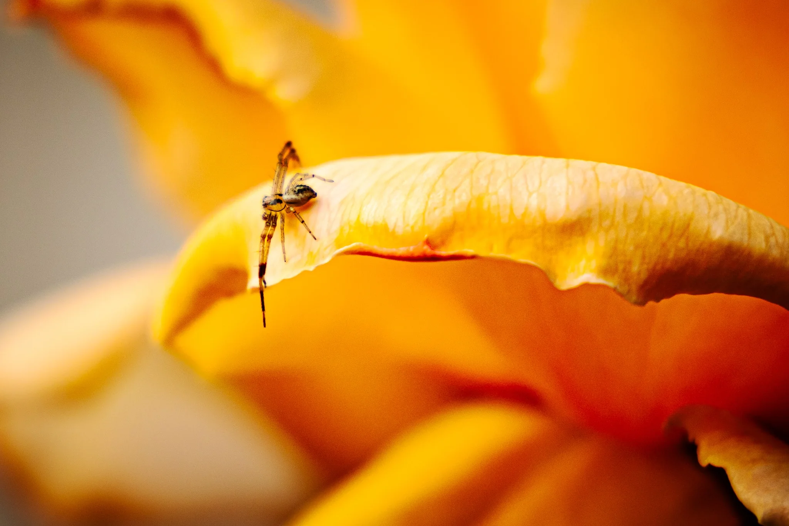

Fine art photography · Northern California and beyond
Beauty is everywhere.
Sometimes all it takes is slowing down long enough to notice.
Explore the collectionsRead the storiesDifferent subjects.
One curious eye.
Every photograph begins with a moment that almost went unnoticed.
From butterflies and wildflowers to bridges, back roads, and quiet corners of the landscape, l0sav Photography invites viewers to look closer.


The stories behind the photographs
Beyond the frame.
Where was it taken? What caught my eye? Why was one image barely touched while another was shaped to feel as though it belonged to another time?
Enter StoriesA wider view.
The subject changes. The perspective remains.





“There is more beauty around us than we realize.”
One beautiful thing I noticed today.
Fine art prints · portrait photography · licensing
Bring a photograph home—or begin a story of your own.
Explore available work, ask about local event inventory, discuss licensing, or inquire about a portrait session.
Print informationGet in touch